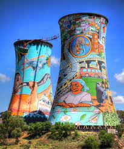
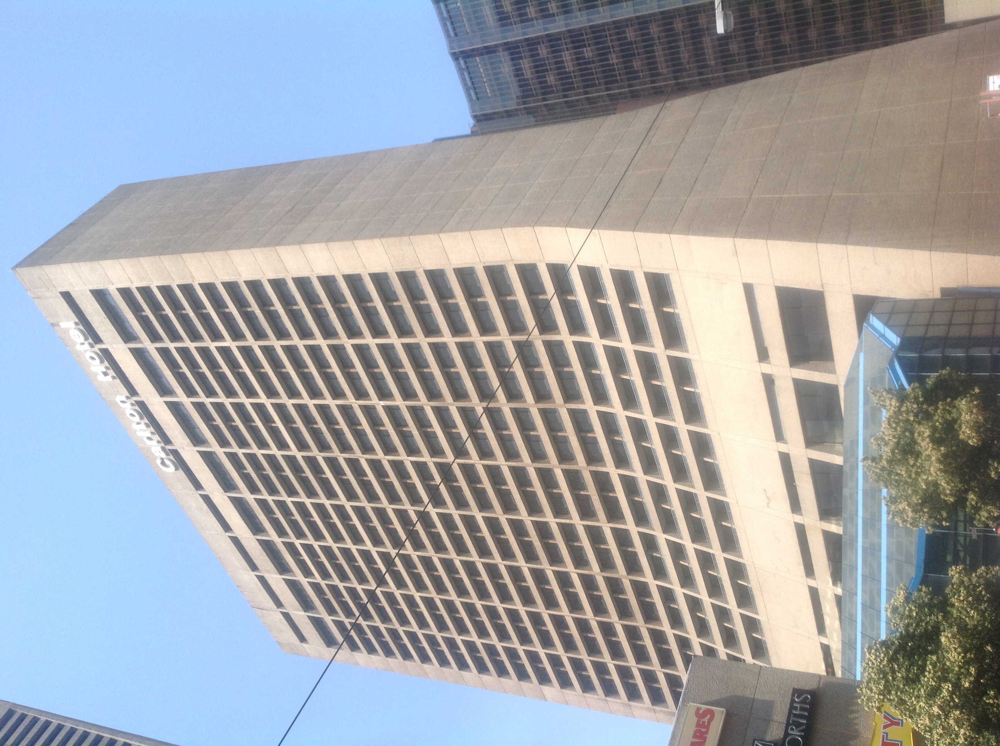

Paris, city and capital of France, situated in the north-central part of the country. People were living on the site of the present-day city, located along the Seine River.For centuries Paris has been one of the world’s most important and attractive cities. It is appreciated for the opportunities it offers for business and commerce, for study, for culture, and for entertainment; its gastronomy, haute couture and painting.
Soweto Towers

The two cooling towers are a prominent landmark in Soweto. They were built in 1951 to supplement the spray pond cooling system as this source of cooling was running at its capacity.
Carlton Hotel

The first Carlton Hotel was located two blocks away, at the corner of Eloff Street & Commissioner Street. Conceived in 1895 by mining magnate Barney Barnato as a huge, world-class luxury hotel with a theater, construction was finally begun by Barnato's heirs in 1903.
City of gold
Johannesburg sits on the edge of the world's largest known gold deposit. The area was first declared open for public digging in 1886, although it is known that gold was traded and worked here for centuries before the arrival of gold prospectors. Within just a few years the city grew to be the largest settlement in South Africa and swelled with migrant workers from across Southern Africa and beyond.